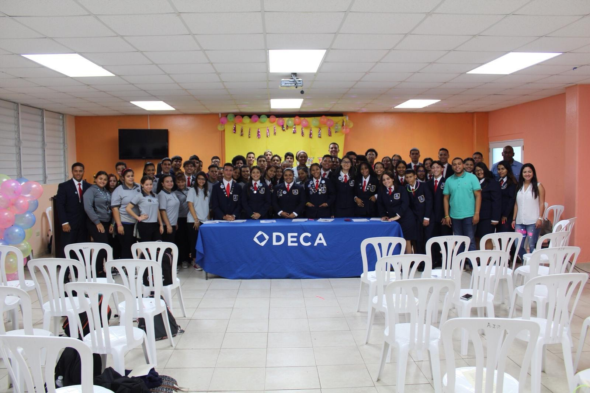
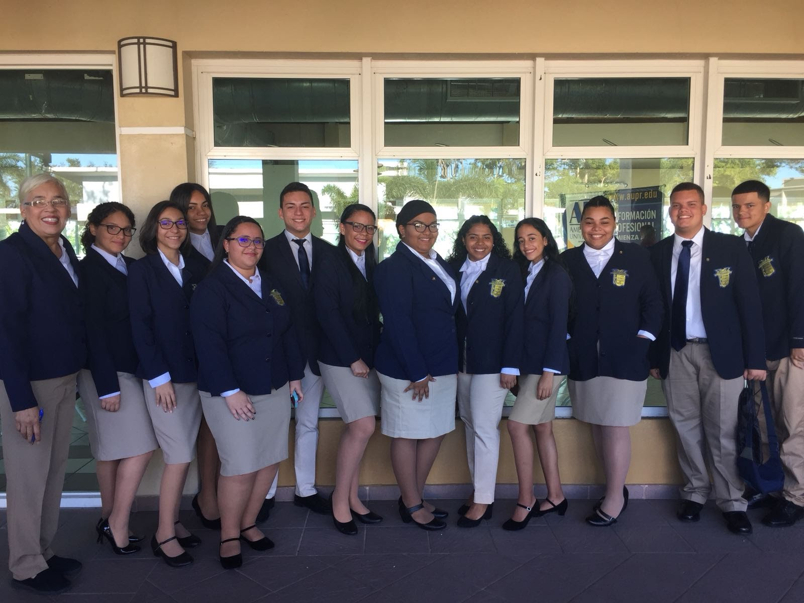
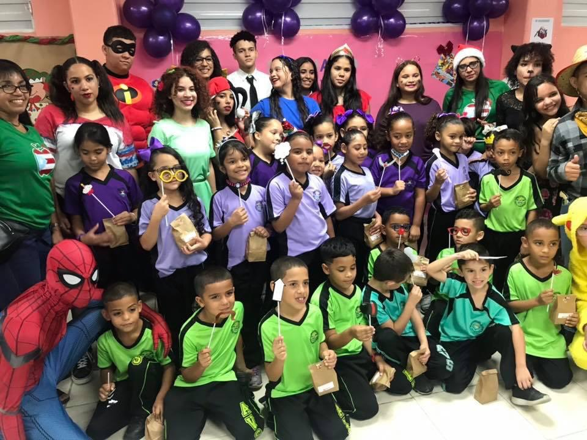

Próposito
El próposito de ambos programas es lograr que el estudiante adquiera conocimientos y desarrolle competencias, valores morales y sociales y actitudes positivas, para realizar por si mismo un proceso de aprendizaje continuo, a tono con los cambios tecnológicos y sociales, de modo que le ayuden a convertirse en un ciudadano capaz de desempeñarse con éxito en una economía global y pueda satisfacer la demanda de empleo que generan las áreas de comercio, administración, gerencia, mercadeo, empresarismo, información tecnológica y turismo. A la vez que fomenta la participación de padres, patronos y la comunidad.
Objetivos
- -Preparar líderes dinámicos, competentes y reforzar la seguridad en sí mismo para el mundo laboral.
- -Crear mayor interés en las ocupaciones de oficina y elaborar amplios conocimientos acerca de lo aprendido en ambas organizaciones.
- -Fomentar el desarrollo de proyectos individuales que constribuya al mejoramiento del hogar, el comercio y la comunidad.
- -Evolucionnar el carácter positivo del ser humano para crear mejores ciudadanos. útiles para la sociedad.
- Bienvenida

- Iniciación
- Convención
Actividades:
- March of Dimes
- Relevo Por La Vida
- Competencias Estatales

- Goofy Games
- Olimpiadas Estatales
- Conferencia Regional
- Talleres
- Juguetería

- MDA ponte en sus medias
- Eventos Competitivos
- Feria Empresarial